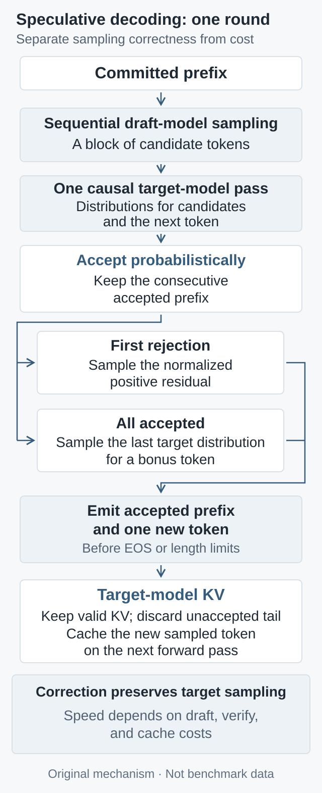

# One linear draft round; no EOS or length truncation shown.
# verify uses the absolute positions and causal mask defined above.
draft, q = propose(h, gamma) # q stores actual proposal distributions
p, target_kv = verify([h[-1]] + draft, target_kv)
A = 0
for i in range(gamma):
x = draft[i]
if uniform_0_1() < min(1, p[i][x] / q[i][x]):
A += 1
else:
break
if A < gamma:
y = sample(normalize(positive_part(p[A] - q[A])))
else:
y = sample(p[gamma])
h = h + draft[:A] + [y]
target_kv.crop(len(h) - 1)
draft_kv = synchronize_draft_cache(h, draft_kv)
Why speculative decoding preserves distributions but may not be faster
From acceptance probabilities and residual correction to a three-token example, derive how consecutive acceptance converts into time per output token, then audit KV caches, masks, sampling settings, and serving metrics.
Speculative decoding offers an appealing promise: run the large model fewer times while preserving its generation distribution. Yet “the same distribution” and “less elapsed time” depend on different conditions. The former requires exact compensation of probability mass; the latter requires hardware to verify several positions cheaply enough. This article audits both accounts for the classical linear-draft algorithm.
These are established foundations: Leviathan et al. first posted their paper on November 30, 2022, before its publication at ICML 2023; Chen et al. first posted theirs on February 2, 2023. I use the former's v2 and the latter's v1, and connect them to EAGLE-3's 2025 design. These papers are not presented as new releases.
1. First specify the distribution being preserved
Fix a committed prefix \(h\). Let \(p(x\mid h)\) be the target distribution and \(q(x\mid h)\) the actual draft proposal distribution, over the same token space. Below I suppress the condition \(h\). Both must already include temperature, top-p, top-k, or other transformations and renormalization. Probabilities from an unmodified softmax cannot verify a token drawn from a transformed distribution. Target and draft settings need not match, but recorded \(q\) must describe the sampling that actually occurred.
Exactness is first a statement about a specified \(p\) under ideal arithmetic. After quantizing the target, the preserved distribution is the one actually defined by that quantized target, not automatically that of the original-precision model. Chen et al. discuss numerical and random-seed limitations: the algorithms consume randomness differently, so the same seed does not guarantee identical text. Greedy decoding needs its own contract: a point mass at the target argmax, with a fixed tie-breaking rule. A draft matching that choice is accepted; a mismatch is replaced. An arbitrary “accept if sufficiently similar” policy is not thereby distribution-preserving.
2. Why rejection cannot simply trigger another target sample
From \(q\), draw a candidate \(x\). For candidates with \(q(x)>0\), define the acceptance probability:
\[a(x)=\min\!\left(1,\frac{p(x)}{q(x)}\right).\]
Let \(\alpha\) be the total acceptance probability at this fixed prefix. Summing the mass already authorized for output gives:
Acceptance therefore measures overlap between distributions at this prefix, rather than the draft model's general knowledge. Following rejection, we must supply the target mass still missing, not pay out a fresh complete copy of \(p\):
If \(\alpha=1\), rejection never occurs and the zero denominator must not be evaluated. If \(q(x)=0\) but \(p(x)>0\), the token can still emerge through the residual. An implementation needs the full residual distribution; saving only the probability of the selected token does not by itself retain the information required for correction.
3. A three-token example makes the compensation visible
Construct three vocabulary symbols \(\mathrm{A},\mathrm{B},\mathrm{C}\), with \(p=(0.5,0.3,0.2)\) and \(q=(0.2,0.2,0.6)\). This is a synthetic example explaining the algorithm, not a language-model measurement.
Token
\(p(x)\)
\(q(x)\)
\(a(x)\)
Directly accepted mass
Mass added after rejection
A
0.5
0.2
1
0.2
0.3
B
0.3
0.2
1
0.2
0.1
C
0.2
0.6
\(\tfrac{1}{3}\)
0.2
0
Each symbol contributes 0.2 of accepted mass, so \(\alpha=0.6\), rejection has probability 0.4, and the residual is \(r=(0.75,0.25,0)\). Distributing the rejected mass in these proportions recovers \(p\). If instead we “resample from \(p\) after rejection,” the output becomes \((0.4,0.32,0.28)\): C, which the draft already overestimates, receives another payment. The problem is not too few samples; it is the wrong correction distribution.

Original analytical schematic, not experimental data. Probability compensation explains the output distribution; drafting, verification, and maintenance explain runtime. They require separate checks.
Draft \(\gamma\) tokens sequentially, then compute their conditional target distributions in parallel. Verify left to right. At the first rejection, discard the suffix and sample one replacement from that position's residual. If all proposals pass, sample an additional bonus token from the target. Let \(A\) count consecutively accepted proposals and \(K\) count tokens committed in the round. Ignoring EOS and length-limit truncation, the tail-sum identity gives:
This does not require independence. Only with the additional assumption of independent acceptance events, each having probability \(\alpha\), do we obtain the classical approximation:
At \(\alpha=1\), the result is \(\gamma+1\). Real prefixes change and difficult stretches can persist; first-position acceptance cannot simply replace the whole survival curve \(\Pr(A\ge i)\). For example, under the independent approximation, \(\alpha=0.6,\gamma=3\) yields only \(\mathbb{E}[K]\approx2.176\), not four tokens. Later proposals increasingly risk becoming computation that was paid for but never committed.
5. Correct probabilities require the same cached prefix
Consider an auditable implementation convention: tokens are one-indexed, positions zero-indexed. There are \(L\ge1\) committed tokens, but the target KV cache contains only the first \(L-1\); the last token \(x_L\) is pending a forward pass. Feed \([x_L,d_1,\ldots,d_\gamma]\) to the target in one call. Row \(r=0,\ldots,\gamma\) has absolute position \(L-1+r\), and its logits predict:
\[p_{r+1}(\,\cdot\mid x_{1:L},d_{1:r}).\]
Here \(d_{1:0}\) denotes the empty sequence. Per sequence, the query tensor has shape \(H_{\mathrm q}\times(\gamma+1)\times d_k\), where \(H_{\mathrm q}\) is the number of query heads and \(d_k\) is the query/key dimension per head. After adding keys and values, their logical length is \(L+\gamma\); the number of KV heads may differ from the number of query heads. For a zero-indexed key \(c\), the causal mask must satisfy:
Each row thus sees only its legal prefix, not later draft tokens simply because the entire block is available. When a kernel receives shorter queries than KV sequences, check causal alignment explicitly: the FlashAttention documentation records bottom-right alignment and a change across versions. Setting causal=true alone does not establish the intended semantics. After accepting \(A\) proposals, crop the target cache to \(L+A\) entries. The newly drawn residual or bonus token \(y\) is not yet cached, restoring the invariant “new sequence length minus one.” This convention needs no extra target catch-up pass:
# One linear draft round; no EOS or length truncation shown.
# verify uses the absolute positions and causal mask defined above.
draft, q = propose(h, gamma) # q stores actual proposal distributions
p, target_kv = verify([h[-1]] + draft, target_kv)
A = 0
for i in range(gamma):
x = draft[i]
if uniform_0_1() < min(1, p[i][x] / q[i][x]):
A += 1
else:
break
if A < gamma:
y = sample(normalize(positive_part(p[A] - q[A])))
else:
y = sample(p[gamma])
h = h + draft[:A] + [y]
target_kv.crop(len(h) - 1)
draft_kv = synchronize_draft_cache(h, draft_kv)
The draft cache cannot simply copy the target's crop rule: the last sequentially sampled proposal often has not entered draft KV yet. Synchronize against the actual valid prefix, charging any catch-up work to drafting. Cropping can update logical lengths or page tables instead of copying a long cache. Rejected tokens must become invisible, and absolute positions must not be reset incorrectly.
Parallel verification does not remove arithmetic. Let \(m=\gamma+1\), with \(N_\ell\) layers and \(H_{\mathrm{kv}}\) KV heads, and assume that the value dimension is also \(d_k\). For one sequence with standard dense attention, attention multiply-add work per layer scales as \(O(H_{\mathrm q}m(L+\gamma)d_k)\). This excludes QKV/output projections, the MLP, and vocabulary projection, so it is not total FLOPs. During verification, target KV holds \(2N_\ell H_{\mathrm{kv}}(L+\gamma)d_k\) elements, including temporary drafts; multiply by storage bytes per element for memory size. Weights, activations, and draft-model caches are separate. Naively retaining full target and proposal vectors at every position for vocabulary \(\mathcal V\) adds \(O((\gamma+1)|\mathcal V|)\) probability-buffer elements. Recomputing on demand is possible but must be charged. Saving rounds therefore does not imply a proportional reduction in arithmetic or memory.
6. Converting saved rounds into saved time needs another inequality
Chen et al.'s hardware analysis identifies an opportunity: small-batch decoding can be limited by weight reads, KV access, and communication latency, leaving arithmetic capacity for short-block verification. This does not make arbitrarily long verification free. Drafting may remain sequential, while long contexts, larger batches, and the extra model's memory occupancy can change the bottleneck.
Let \(T_{\mathrm d}\), \(T_{\mathrm v}\), and \(T_{\mathrm b}\) denote per-round time for drafting plus draft synchronization, target verification, and remaining sampling and maintenance, without double counting. For a non-overlapping execution schedule, define \(C=T_{\mathrm d}+T_{\mathrm v}+T_{\mathrm b}\). Over a sufficiently long run with a stable workload, compare cumulative time with cumulative committed tokens:
The unit is time/token. The baseline \(\bar t_{\mathrm{base}}\) must use the same target, precision, sampling configuration, and workload. This ratio is not the unweighted mean of per-round \(\tfrac{C_j}{K_j}\). If computation overlaps communication, measure whole-round time along the critical path rather than adding overlapping intervals.
The accounting yields a testable length-selection rule: increasing \(\gamma\) by one is worthwhile only when its extra time is sufficiently low relative to its extra committed output. Let the current per-round means be \(\bar C,\bar K\), with changes \(\Delta C,\Delta K\) under the new policy. For \(\Delta K>0\):
Let \(A^{(\gamma+1)}\) count consecutive acceptances after extending the draft to \(\gamma+1\) candidates. Only for the same starting prefix or starting-prefix distribution, with the joint proposal and acceptance law of the first \(\gamma\) steps unchanged, do we have \(\Delta K=\Pr(A^{(\gamma+1)}\ge\gamma+1)\). In general, measure changes in policy means. The best draft length therefore belongs to the serving state, not merely to a model name.
7. Which term does a better draft actually improve?
EAGLE-3, first posted March 3, 2025; v3 read here, removes the requirement to directly fit the target's top-layer features, fuses features from different layers, and simulates later drafting steps that consume the draft's own outputs during training. This suggests a design direction: reduce mismatch over multiple steps and improve consecutive acceptance, rather than only the first prediction.
Better training does not guarantee faster deployment. Extra draft computation, feature transfer, or a larger candidate tree can also increase the cost numerator. The official implementation distinguishes checkpoints and draft-tree settings; a fair comparison records both. EAGLE-3 uses a dynamic draft tree. This article's linear-chain counting and cache pseudocode are not an implementation of that tree verifier. Branch visibility, proposal probabilities, and residual handling must be checked for the actual algorithm; sharing the “speculative” label does not transfer a proof automatically.
8. Demonstrate a better system without changing the denominator
This article does not run LLM GPU latency experiments or reproduce the papers' speedup factors. Accompanying small checks used exact rational arithmetic for the three-token example and passed 9 edge cases, 2,048 distribution pairs, three-token output enumeration across 64 conditional trees, 45 abstract cache/mask cases, and 28 length-formula cases under the independence assumption. A negative control detected the error of proposing greedily while verifying with original softmax probabilities. The probability and cache-invariant check script is downloadable and uses only the Python standard library. Its cache tests check an abstract token/context invariant; they execute no neural attention, KV kernel, or GPU work, and do not validate physical paged caches or floating-point behavior. An executable system evaluation should have two layers:
Check correctness first. Enumerate acceptance and residual paths on a small vocabulary, then compare frequencies over repeated samples. For a fixed prefix, align each batched-verification logit row with a token-by-token baseline, stating numerical tolerances. Force first-position rejection, middle rejection, and full acceptance; compare the rolled-back cache with full recomputation. Separately test EOS, length limits, and changing top-p support. Identical text from one shared seed is not a necessary acceptance criterion for stochastic sampling.
Then check serving behavior. Fix the target checkpoint, tokenizer, precision, hardware, total memory budget, and request set. Sweep draft length across single-request and concurrent loads, short and long contexts, and different output lengths. Record survival curves, actually committed token counts, round-time components, peak memory, and throughput under the same service constraints.
Separate requests used to tune draft length from final test requests, retaining stratified results by language, code, and difficulty. For stochastic generation, use the same prompt distribution and maximum output budget, and normalize costs by actual committed output. Uncommitted proposals must not count toward output throughput. Disclose actual length differences caused by EOS rather than manufacturing speedups by shortening answers.
Prefill processes the input prefix; decode generates new tokens incrementally. Improving decode alone does not imply the same proportional reduction in time to first token. Report time to first token, end-to-end request latency, mean time per output token, and p50/p95 streaming inter-arrival times, disclosing queuing, warm-up, and batching policies. Delivering several tokens together can improve amortized cost while still making a user wait for a long round. Higher throughput likewise does not guarantee lower p95 latency.
The falsification criteria are straightforward. If probability checks fail, the speed comparison lacks a matched quality contract. If acceptance length improves while time/token or p95 deteriorates under the same constraints, draft improvements have not yet become serving benefits. Speculative decoding earns its value by satisfying both the distribution contract and the execution budget.